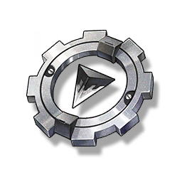

Resonators
Monsters
Weapons
Items
Boost Part
Resources

Material for Crafting.
Boost Parts disassembled from various weapons, highly versatile. If a sufficient quantity can be collected and simply modified, it can be used to enhance the performance of Tacetite weapons.